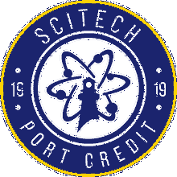
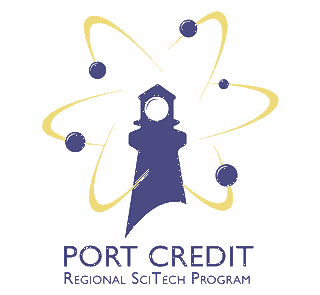

About Technology Commons
Technology Commons is an open teaching project for learning technology by designing, building, testing, explaining, and improving real work.
The idea is simple:
Come with a question. Leave with something you understand well enough to use, test, build, or explain.
The site brings lessons, projects, tools, references, classroom routines, and research into one shared place for technology education.
Why We Built This
Technology courses move constantly between thinking and doing. A student may need to understand a measurement, make a sketch, write code, diagnose a fault, choose a material, use a machine, test an idea, and explain what happened, sometimes all in the same project.
Technology Commons is designed around the kinds of questions that appear while doing that work:
How do I turn an idea into something that actually works?
How precise does this measurement need to be, and which tool should I use?
Why did this prototype, program, circuit, or repair fail, and what should I change next?
How can I show the decisions, evidence, and learning behind the finished result?
// goal: learn by making, testing, explaining, and improving
The aim is not to separate theory from practice. It is to build clear mental models through real work, then use evidence from that work to improve the next attempt.
Technology Commons
Technology Commons supports three secondary technology course groups: TAS2O Exploring Technologies, TEJ3M / TEJ4M Computer Engineering Technology, and TTJ3C / TTJ4C Transportation Technology.
Each course has its own pathway, but they share common ideas: safe work, measurement, design, technical communication, iteration, evidence, reflection, and the responsibility to leave useful knowledge behind for others.
The word commons is intentional. Useful knowledge should be shared, inspected, improved, and reused. Students should be able to find what they need today, while educators should be able to inspect the structure and adapt what is useful elsewhere.
Port Credit roots
Technology Commons is built for teaching at Port Credit Secondary School, and its visual identity deliberately connects to the school without trying to replace the school’s own identity.
Port Credit’s secondary-school history reaches back to 1919, when a continuation school opened in the community. The PCSS Alumni Association preserves school history, yearbooks, memorabilia, and stories while supporting scholarships and selected school projects.
The Regional SciTech Program launched in September 2005. Alumni material describes it as an integrated science and technology program intended for both inquiry-oriented academic learners and hands-on learners interested in college, apprenticeships, skilled trades, and industry.
The school motto, Lux numquam desit, is a natural fit for a visual system built around the Port Credit lighthouse, learning, and the idea of carrying useful knowledge forward.
Technology Commons also recognizes the Mississaugas of the Credit First Nation and the Indigenous history and continuing stewardship connected to this place. Purple and orange are included in the Commons palette as community and reflection accents that can be used thoughtfully in Indigenous learning and reconciliation contexts. They are Commons colours, not presented as official colours of the Mississaugas of the Credit First Nation.
Brand system
The Technology Commons palette is built from the Backgammon Simplified visual system first, then extended with colours inspired by Port Credit, the harbour, the Credit River, school technology programs, and community work.
That means the everyday palette stays warm, quiet, and restrained: deep navy instead of black, ivory instead of cold grey, copper instead of bright orange, and muted blue, green, gold, plum, and red accents instead of highly saturated colours.
Exact colours sampled from supplied PCSS and SciTech marks are kept separately as source colours. Those source colours belong to the logos and historical references. They do not need to become the normal interface or document colours for Technology Commons.
Commons core
These are the foundation colours. Most pages, slides, handouts, diagrams, and interfaces should be built primarily from this family.
Lighthouse Ink
#11182F
Harbour Navy
#1B2040
Breakwater Slate
#39415F
Pier Grey
#5F626E
Stone
#88786E
Sandbar
#D9CCC0
Harbour Ivory
#F3E8DC
Sail White
#FAF7F2
Canvas White
#FFFDFC
Harbour blues
Blue still connects the system to Port Credit and SciTech, but the working blues are deliberately muted so they sit comfortably beside navy, ivory, and copper.
Port Credit Navy
#1B2040
SciTech Navy
#30375E
Harbour Blue
#3D5F87
Lake Blue
#5A748C
Technical Blue
#466A7D
Winter Sky
#D9E2E4
Wellness and shoreline greens
Green is for wellness, reflection, positive progress, environmental themes, and calmer technical material. These colours remain earthy rather than bright.
Evergreen
#2F6B4F
Credit River Moss
#4F6B46
Sage
#7E9474
Sea Glass
#A8BDB2
Calm Mint
#E4ECE5
Copper, brass, and warm gold
The warm-metal family carries most of the accent work that bright school yellow or orange previously did. Copper is the primary accent because it already belongs to the inherited Backgammon Simplified system.
Dark Copper
#915634
Copper
#AC7652
Brass
#8A6A25
Warm Gold
#C39A48
Utility and community accents
These colours add energy or meaning without leaving the warm family. Use them as accents rather than large page backgrounds.
Signal Amber
#A7611B
Burnt Orange
#A85A2A
Clay Orange
#B7683A
Sunrise Orange
#C57944
Community Plum
#6B536D
Deep Plum
#5B455F
Important and alert accents
Red remains uncommon so it keeps its meaning for deadlines, hazards, errors, and genuinely important emphasis.
Beacon Red
#923B45
Mistake Clay
#A54C35
Source colours from supplied PCSS marks
These values are retained for faithful reproduction and documentation of the supplied school marks. They are reference colours, not the default Technology Commons working palette. The logos themselves should not be recoloured just to force them into the Commons palette.
| Source mark | Blue | Yellow / gold |
|---|---|---|
| Warriors roundel | #1D2347 |
#FCD937 |
| Newer SciTech roundel | #19226D |
#FFCF01 |
| Older Regional SciTech mark | #464780 |
#F0DB7C |
Recommended combinations
| Mode | Use |
|---|---|
| Commons core | Lighthouse Ink + Sail White + Copper |
| Port Credit | Port Credit Navy + Sail White + Warm Gold + Copper |
| SciTech | SciTech Navy + Harbour Blue + Sail White + Warm Gold |
| Technical | Lighthouse Ink + Sail White + Harbour Blue + Copper |
| Wellness | Harbour Navy + Sail White + Evergreen + Sea Glass |
| Community / reflection | Harbour Navy + Sail White + Community Plum + Sunrise Orange |
| Warm utility | Harbour Navy + Harbour Ivory + Signal Amber + Dark Copper |
| Urgent / important | Lighthouse Ink + Sail White + Beacon Red, used sparingly |
A page or slide should normally use one mode, not the full palette at once. Lux numquam desit can act as a useful guiding idea: keep the design clear enough that the important information is never lost.
Logos and downloads
The logo files below are collected here so teachers and students have clean working copies without needing to search the web or pull images from screenshots. Some marks are current, some are historical, and some were recreated locally. We will keep improving the provenance notes as better source files are confirmed.
Port Credit Warriors
Current sports-style lighthouse roundel from the supplied PCSS collection.
{kind=link}

SciTech roundel
Newer circular SciTech treatment with lighthouse and atom imagery.
{kind=link}

Regional SciTech
Regional program mark from the supplied PCSS files.
{kind=link}

Legacy SciTech
Older treatment retained for historical material and design-history reference.
Logo use
Keep the supplied proportions and colours. Do not stretch, skew, add effects, or casually recolour school marks. When possible, use transparent source files rather than extracting logos from screenshots.
Technology Commons can sit beside these marks, but it should not imply that every Commons page or resource is an official publication of Port Credit Secondary School or the Peel District School Board.
Open Tools and Resources
Technology Commons is also a home for reusable tools, references, and classroom supports.
OPEN COMMONS
Things you can inspect and reuse
The site is built in public. Lessons, design-process resources, classroom tools, research notes, and source code can be inspected and improved over time.
QUARTO :: CURRICULUM :: OPEN SOURCE
Technology Commons
The website, course materials, shared components, and curriculum structure behind this project.
DESIGN :: ITERATION :: EVIDENCE
NICE Design Process
A shared engineering design cycle for defining requirements, investigating, creating, communicating, evaluating, and revising.
ATTENTION :: ROUTINE :: REFLECTION
Well-being
Teacher-facing classroom routines that support attention, reflection, mindfulness, self-regulation, transitions, and a positive learning environment.
CLASSROOM :: TECHNICAL :: OPEN EDUCATION
Lore
Classroom experiments, technical investigations, project notes, and research connected to technology education.
Built to Be Useful
Technology Commons should be useful first. A student should be able to open the site during class, find the right course or tool, and continue working without needing to understand how the site itself is organized.
See what is being explored in Lore ->
FEEDBACK
Help make it better
Found a mistake, have a question, or see something that could be clearer? The source is public and feedback can be shared through GitHub.